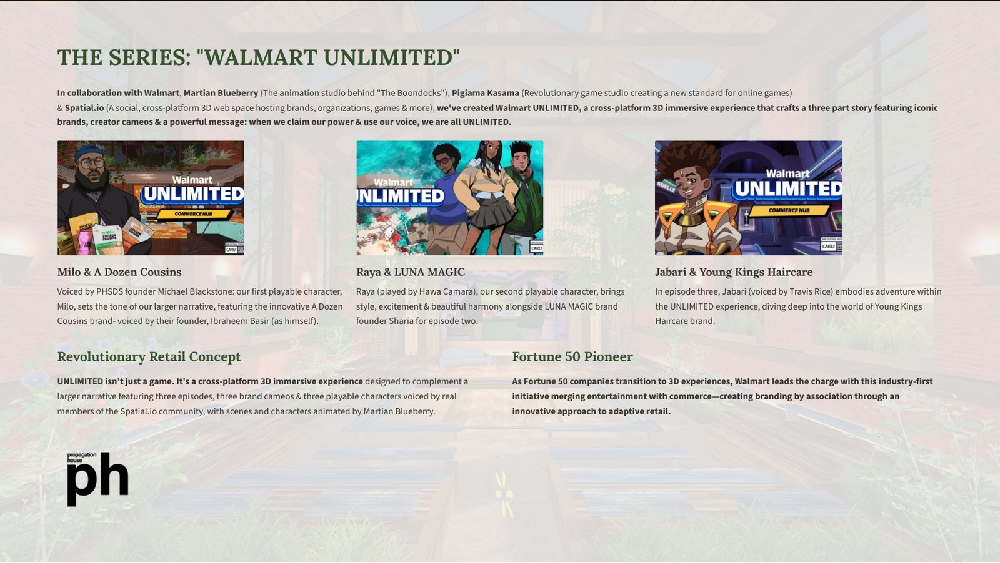
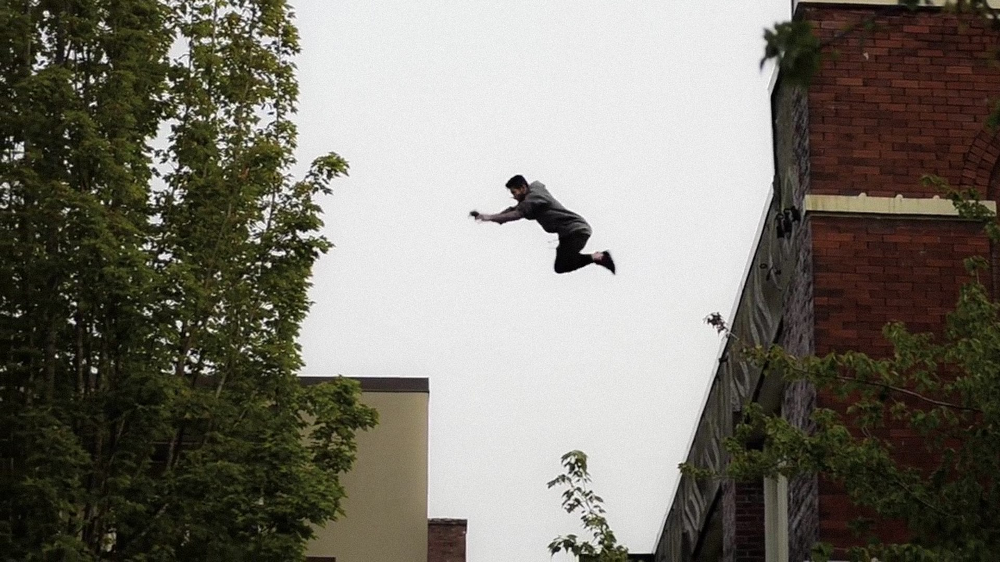
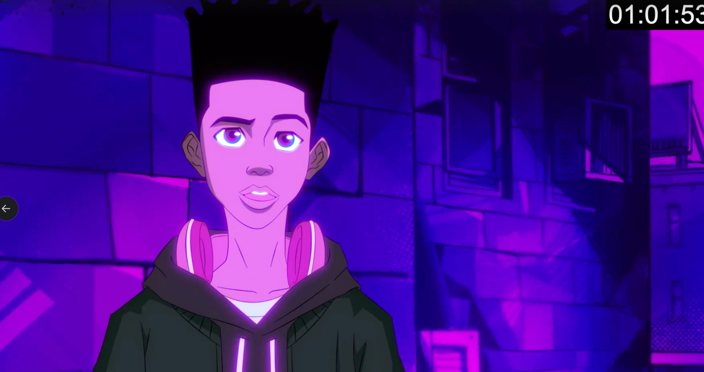
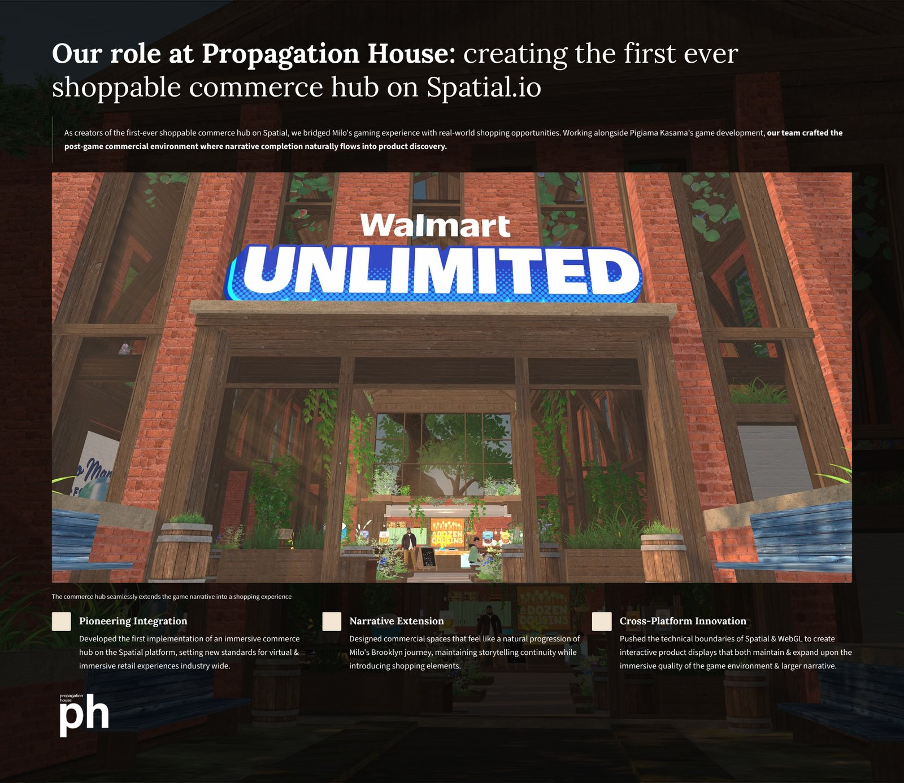
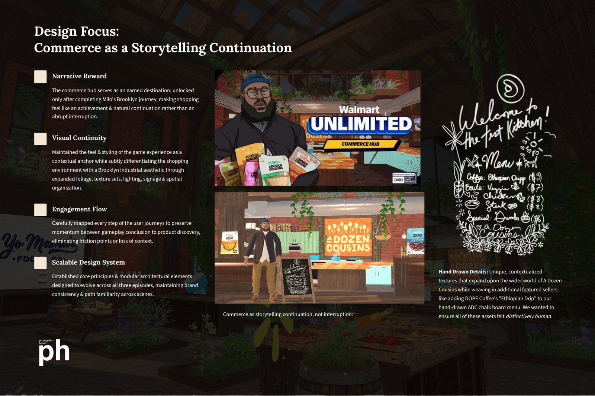
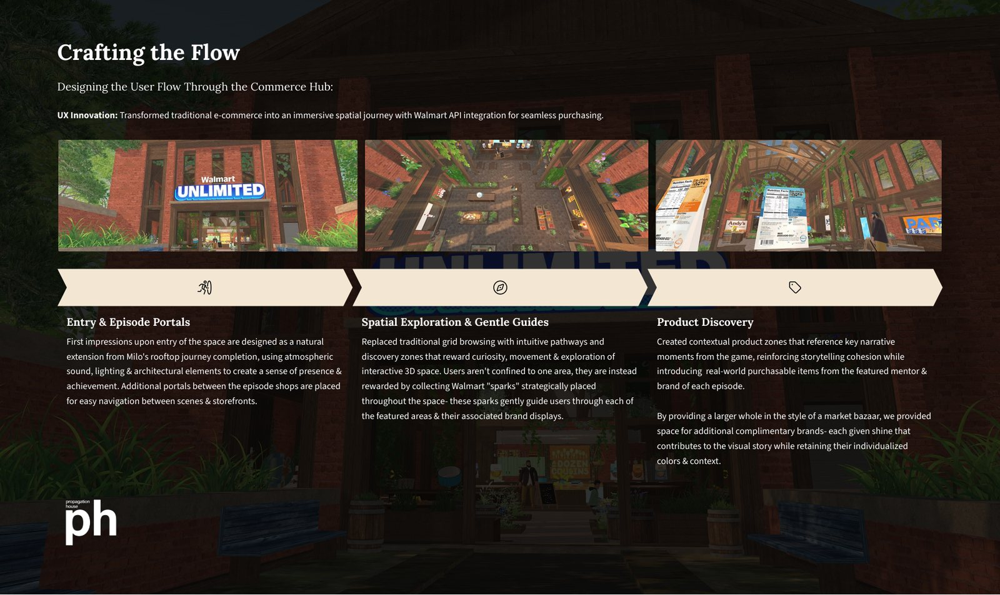
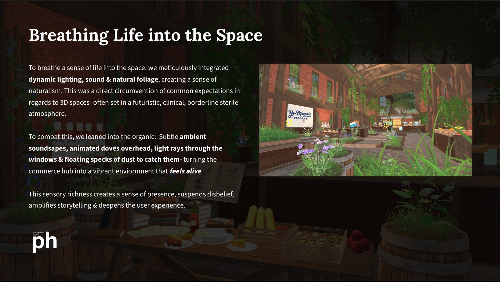
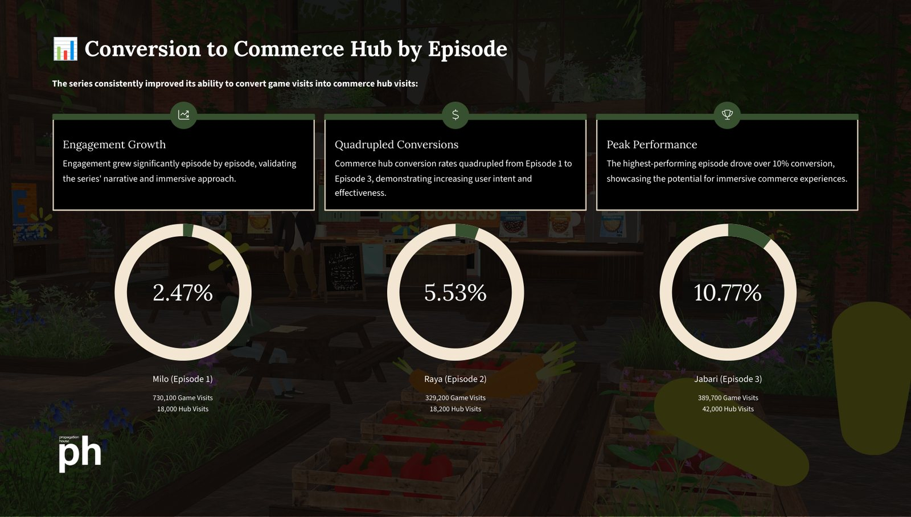
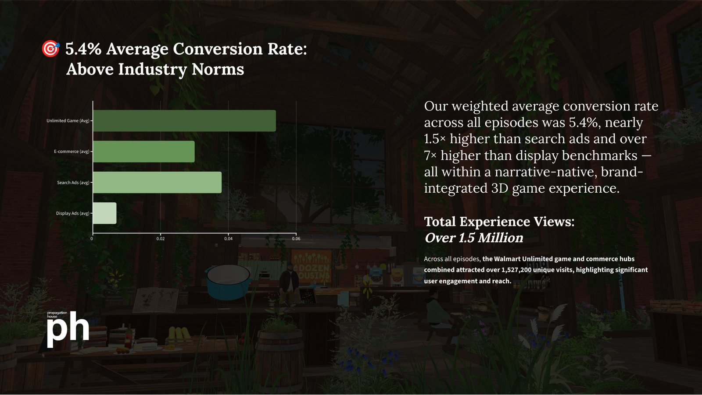

A Year in the Aisle
We spent a year building a shopping trip that behaves like a game — and then Walmart put it in front of a million players. This is how that happened, written down the way we remember it.

Start with the question the whole thing hung on — it sounds simple and is not: what if the aisle itself was the game? Not an ad shaped like a game, not a store with a minigame bolted on. The aisle, as the game.
The series, the store, the voices
Walmart asked it out loud, with Martian Blueberry — the animation studio behind The Boondocks — at the table, Pigiama Kasama building the game, Spatial hosting the world, and us designing the part that turned players into shoppers. The pitch landed as Walmart Unlimited: a three-part shoppable miniseries where the message underneath everything was the same — when we claim our power & use our voice, we are all unlimited.
The full project-review deck is hosted here, slide by slide.

Each episode followed a playable character voiced by someone real from the Spatial community. Milo opened the run, voiced by our own founder Michael Blackstone — the studio’s founder is a character inside its biggest campaign, which is the kind of detail you cannot script. Alongside him, A Dozen Cousins founder Ibraheem Basir voiced himself. Raya (Hawa Camara) carried episode two into Luna Magic’s world; Jabari (Travis Rice) took episode three into Young Kings Haircare. Scenes and characters animated by Martian Blueberry. Three episodes, three brand cameos, three people who actually exist, acting inside a Fortune 50 store.
Milo carries a piece of the house most people never see. Voiced by our founder — and built from him: the rooftop run in episode one, jumping building to building over the city, is Michael Blackstone’s own past written into the character. Years of parkour in Bellingham before the studio — real roofs, real gaps. When Milo leaps, there is muscle memory under the keyframes.


A hub, not a store
Our role sat at the end of the game, and it was not an afterthought — it was the first shoppable commerce hub ever built on Spatial. When Milo’s Brooklyn journey wrapped, the world opened into a market bazaar instead of a credits screen: narrative completion flowing straight into product discovery, shopping feeling like an earned destination rather than an interruption. The game was never a brochure for shopping. It was shopping, welded to the story that got you there.

The hub earned its keep in the details. A hand-drawn chalkboard menu for A Dozen Cousins — with DOPE Coffee’s Ethiopian Drip worked into the board like the stall had always sold it. Modular walls and windows that let the same bones re-dress for each episode’s featured brand. Interactive displays with individualized framing, lighting and interior themes. Hero products front and center, companion brands set around the room like stalls in a real market, each keeping its own colors and context. We wanted every asset to feel distinctively human — the opposite of the clinical, futuristic showroom 3D retail usually reaches for.

Navigation did the selling. Instead of a product grid, we built discovery zones that reward curiosity: players collect Walmart “sparks” scattered through the space, and the sparks gently pull them past every featured display. Contextual product zones reference key moments from the episode you just played, so the shelf you are inspecting is a callback, not an ad. Atmospheric sound, light rays, and portals between episode shops kept momentum flowing from gameplay conclusion to product discovery without a single friction point we could find and kill.

Keeping a 3D store alive
3D retail has a sterility problem. You know the look — glossy floor, perfect lighting, nothing alive. We went the other way on purpose: ambient soundscapes, animated doves overhead, light rays through the windows with floating specks of dust to catch them. Organic beats clinical. A space that feels alive suspends disbelief, and a player who has suspended disbelief will actually look at a shelf.

Under the hood, the Walmart API did the quiet work: real-time product info straight from inventory, personalized recommendations from in-world behavior, and a secure checkout that let players complete a purchase without ever leaving the 3D worldspace. For Walmart it was the first live test of their Unity commerce SDK. For us it was the first time spatial-retail instincts got a stage this size. The whole thing ran in a browser — no installs, nothing to download. The world arrived the way a page does.
What the numbers said

Here is the slide we keep coming back to. Episode one converted 2.47% of unique game visits into purchases. Episode two: 5.53%. Episode three: 10.77% — and the weighted average across all three landed at 5.4%, which is nearly 1.5× search ads and over 7× display benchmarks. The numbers grew episode over episode because the design system learned: modular bones, same paths, better dressing. Players came back for chapter two and three, and the store got better at being a store every time they did.

All told, the series and commerce hubs pulled over 1.5 million unique visits — 1,527,200 — with 730,100 game visits in episode one alone, and a peak of 1M+ players in a single month. Not one of them downloaded anything. Immersive commerce has been a slide in conference decks for a decade. This one had a receipt attached.
The trade press noticed in its own way — nine outlets wrote it up in the first weeks, from Inc. to Ad Age, each one reaching for the same word: first. First immersive gaming title, first Unity commerce SDK in the wild, first shoppable miniseries. When that many people reach for the same word, you stop arguing with it.
What the aisle taught us
The scrapbook version of this project has some pages we'd photocopy for the next one. Build the commerce loop early — not as a milestone, as a toy; the moment buying works inside a game, every design argument gets honest. Keep the episodes small. A world you can walk across before the coffee cools is a world people finish. And let the artists near the plumbing: half of what worked in Unlimited came from people who had never touched a commerce API deciding the checkout should feel like part of the scenery.
Adaptive retail is the industry's name for it. Our name is quieter: stores that meet you wherever you happen to be looking. The practice started in physical space and it still runs on that instinct — the room responds, the shelf answers back, the game is the aisle. Walmart Unlimited was the first time the whole idea shipped at scale. It won't be the last.


Nine outlets covered the launch window. A million players came for episode three — the receipts live in their pages, not ours.